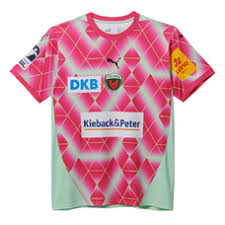
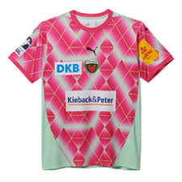
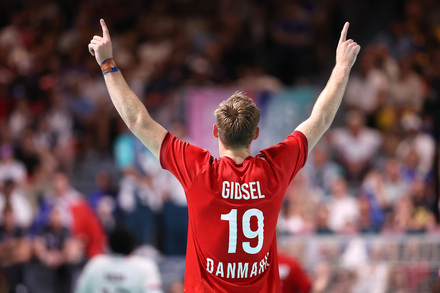
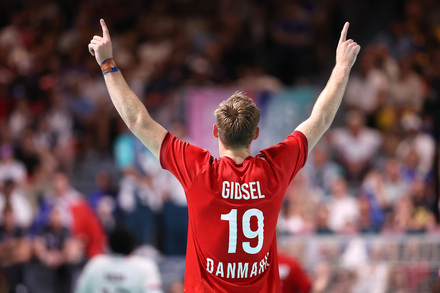

Dresy Füchse Berlin pro sezonu 24/25 jsou zelené, což je tradiční barva lišek z Berlína. Venkovní sada je však růžovo tyrkysová.
 

Füchse ve svém kádru má nejlepšího hráče současnosti. Tím je Mathias Gidsel
Mathias Gidsel je trojnásobný mistr světa a nejlepší hráč sezóny 23/24. Je dánské národnosti, což je velkým bonusem pro získávání titulů mistrů světa, či mistrovství evropy.
 
